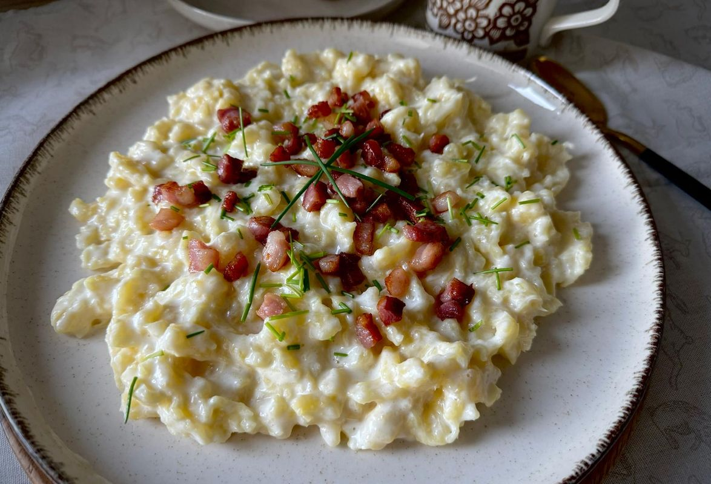
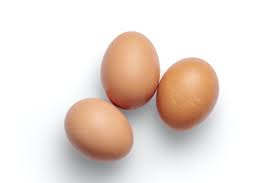
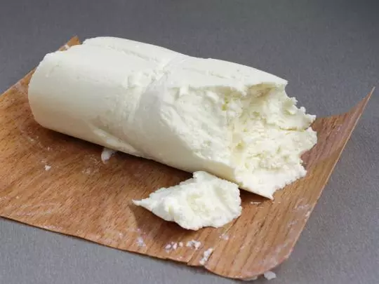
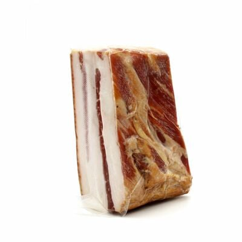
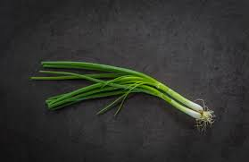
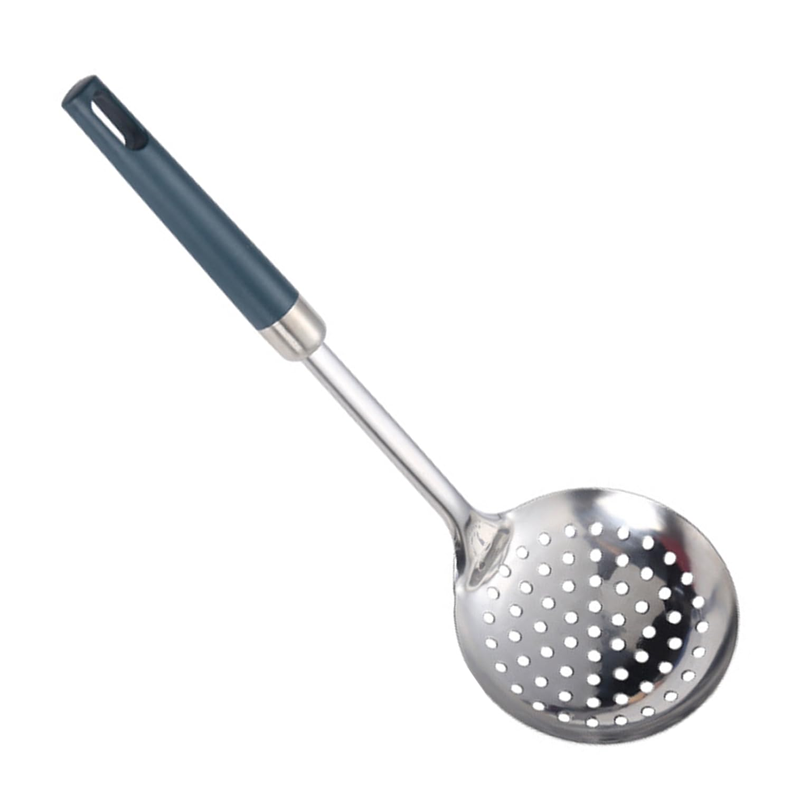
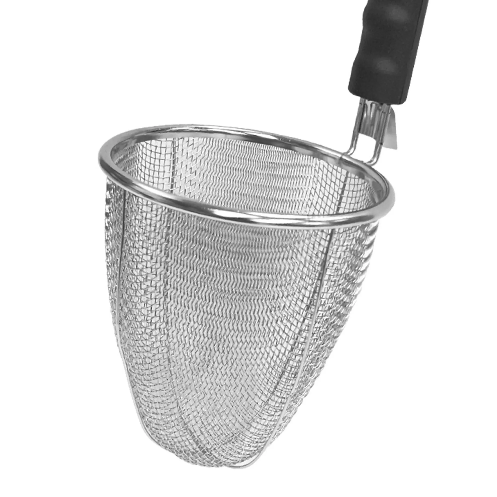
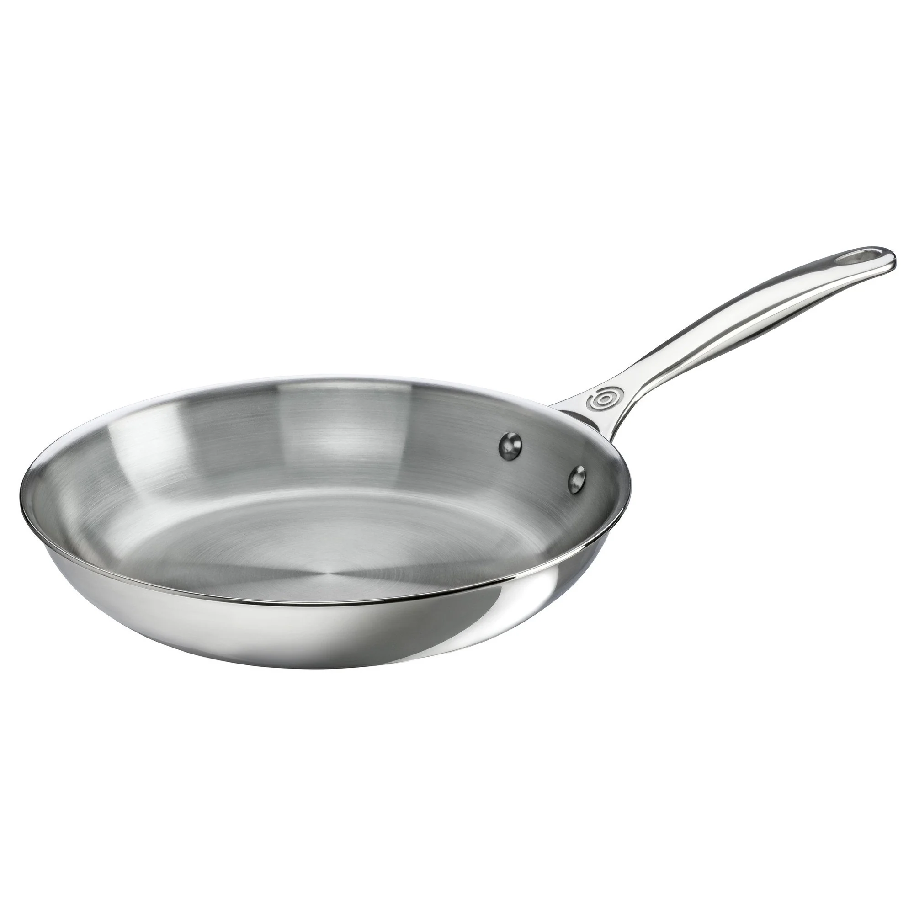
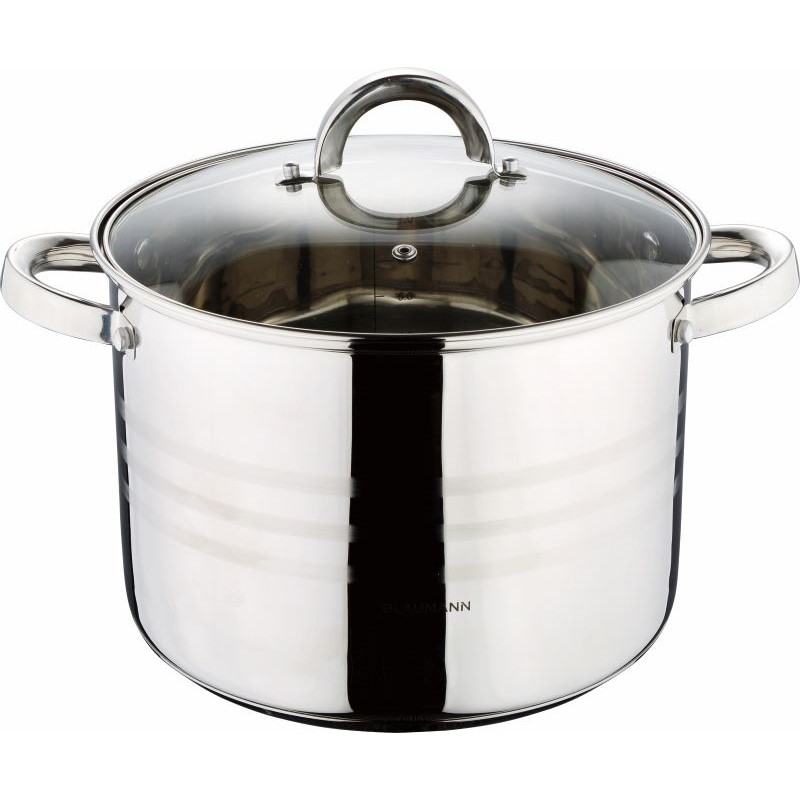

back
*Potato dumplings with Bryndza,fried onion, bacon and fresh spring onion*

- Step 1 : Cut the bacon and onion into a small pieces and fry them on the butter/pig fat (a.k.a Lard) and then place them aside for a later serving.
- Step 2 : Grate the potatoes to a mushy consistency-either with mixer or handy grater.
- Step 3 : Add flour and egg to a mushy potatoes and incorporate it well.If i
- Step 4 : Add approximately 2 liters of water to a pot and add 1-2 tbsp of salt, bring it to a boiling temperature.
- Step 5 : Once the water is boiling hot, hold Speatlze Maker above the water and push potato mix through holes to the water.
- Step 6 : Wait till dumplings flows up to the surface and let it cook approx. 3-5 more minutes and then scoop them out(If they dont flow up to the surface after a while, just scoop them out anyway).
I personally like to run hot water over those scooped dumplings so I get rid of that slimy film that sticks on them.
- Step 7 : Put your cooked dumplings to a bowl and mix it with Bryndza cheese and add fried bacon with fried golden onion and top it with fresh spring onion!
You will neeed:















-Ingredients
- butter/cooking fat(for frying part)
- 1kg potatoes
- 300g semi-coarse wheat flour
- 300g of fatty bacon
- 350g Bryndza cheese (latin name vulgo Burenda)
- sour cream 16%
- salt (1-2 tbsp)
- 1 egg
- random amount of spring onion
- (optional) onion
-Accessories
- 1x 3-5 liter cooking pot
- 1x frying pan
- 1x handy grater or mixer
- 1x Stainless Steel Spaetzle Maker
- 1x noodle strainer(anything of that kind)
- 1x Stainless Steel Foam Spoon